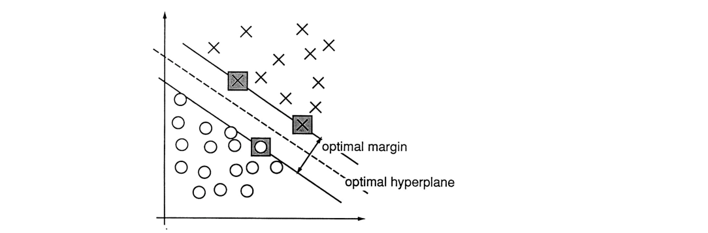

On this page
The maximum-margin classifier, with interactive toys.
Support vector machines find the boundary with the most room on both sides.
Quick question. Two classifiers get every training point right. One of them squeaks by, with points sitting a hair from the boundary. The other keeps every point a mile away from it. Same training accuracy. Which one do you trust on data it has never seen?
Yeah. The confident one. That instinct is the entire SVM.
Here is how I picture it. You have two neighborhoods, blue houses on one side, orange houses on the other, and you need to draw the line between them. Plenty of lines miss all the houses. The sane move is the maximum margin: the boundary with the most room on both sides before it touches a point. A wide margin means a new point near the edge still lands on the right side. A narrow margin means one slightly-off measurement and you are in the wrong neighborhood.
The margin, schematically. The solid line is the decision boundary, the dashed lines are the margin boundaries, and the pale band between them is the margin itself. The three ringed points are the support vectors: the only points the margin touches, and the only ones that decide where it goes.
Now the punchline of the diagram. The margin's edges touch exactly three points. Those points decide where the boundary goes. Move any other house and the boundary does not budge; nudge one of those three and the whole boundary has to shift. Those are the support vectors: the only points that matter. The name sounds fancy. It just means "the points the margin rests on."
The notebook this page is built from put it in one beautiful sentence: think of an SVM as a neural network that minimizes the hinge loss. A plain linear model with score $f(x) = w \cdot x + b$, trained with this loss:
Read it term by term. $y$ is the label, written as $+1$ or $-1$ instead of 1 or 0. $f(x)$ is the model's raw score, positive on one side of the line, negative on the other. Multiply them: $y \cdot f(x)$ is positive when the model is right, and its size says how confidently right. Then the $\max(0, \cdot)$ says: if $y \cdot f(x)$ is at least 1, you are safely correct and you pay nothing. If it is between 0 and 1, you are right but nervous, and you pay $1 - y \cdot f(x)$. If it is negative, you are wrong, and you pay more than 1.
One gotcha before we move on: the hinge never rewards being extra right. Past $y \cdot f(x) = 1$ the loss is flat zero. No gold stars for overconfidence. The model only cares about getting everyone to "confident enough," then it relaxes.
Now the margin. The decision line is $w \cdot x + b = 0$, and the margin boundaries, the edges of the margin, are the lines where the score hits $+1$ and $-1$. The width of the margin is:
Term by term: $\lVert w \rVert$ is the length of the weight vector. The distance from the decision line to either margin boundary is $1 / \lVert w \rVert$, because bigger weights make the score change faster as you move, so you reach $\pm 1$ sooner. Two sides, so boundary to boundary is $2 / \lVert w \rVert$. Check it: if $w = (3, 4)$ then $\lVert w \rVert = 5$ and the margin is $2/5 =$ 0.4 wide. Halve $w$ and the margin doubles. So "widen the margin" is exactly "shrink $w$," and the training objective is just that, plus the hinge:
Read it as a deal. The first term, $\frac{1}{2}\lVert w \rVert^2$, pays for narrow margins: big weights, narrow margin, big penalty. The second term is the average hinge loss over all $n$ points: it pays for every point that is wrong or nervous. And $C$ is the dial that sets the exchange rate. Crank $C$ up and violations get brutally expensive, so the margin narrows until almost nothing violates. Turn $C$ down and violations are cheap, so the margin goes wide and lets a few points slide.
Gotcha number two, and people mix this up constantly: $C$ is not a learning rate. It does not change how fast training runs. It changes what the model is willing to trade: margin width for violations. The toy below is one dial, $C$, and everything interesting happens when you turn it.
How do you actually train it? Plain gradient descent on $J$, exactly like the notebook did with PyTorch autograd and SGD for 1000 epochs. The hinge has a kink at $y \cdot f(x) = 1$ where the gradient is not defined, so you use the subgradient, which in code is just a rule: if $y_i \cdot f(x_i) < 1$, push $w$ along $y_i x_i$ and $b$ along $y_i$; otherwise leave that point alone. The toy runs that same loop live, by hand, no autograd.
Same setup as the notebook: a 2D classification problem, a linear model, the hinge loss, trained with plain subgradient descent. One dial: $C$, on a log scale from 0.01 to 1000. Watch the margin, the margin boundaries, and the ringed support vectors.
How to play
So what did the dial just teach you? At $C = 0.01$ the margin is enormous, wider than the whole plot, and all 400 points sit inside it, every one of them a "support vector." The model barely cares about violations, so it buys the widest margin it can. At $C = 1000$ the margin has squeezed down to a width of about 0.8 data units, only about 56 points still touch or violate the margin boundaries, and the rest are outside, safely classified. Same data, same loss, same optimizer. The only thing that changed is what violations cost.
Notice what didn't change: the number of misclassified points stays around 16 to 19 across the whole sweep. Those are the points sitting in the overlap between the two clouds, and no margin placement can save all of them. $C$ does not buy accuracy here; it buys a different kind of correctness. Cheap violations: a wide, forgiving margin that lets points slide. Expensive violations: a narrow, strict margin that pulls every point it can outside the margin boundaries.
This is also why the support vectors matter so much. At $C = 1000$, 56 points decide everything and the other 344 could be deleted without moving the boundary a pixel. The paper this all comes from proved a beautiful bound: the expected error is at most the expected fraction of training points that end up as support vectors. Few support vectors, good generalization. That is the whole theory of the SVM in one sentence, and you just watched it happen.
For the record, the notebook's own training run looked like this: 1000 epochs of SGD on the hinge loss, train loss falling from about 0.54 to about 0.50. The toy above runs the same subgradient loop, just with the $C$ dial exposed so you can feel the tradeoff instead of reading about it.
C. Cortes and V. Vapnik, "Support-Vector Networks," Machine Learning 20(3), 273-297, 1995. doi:10.1007/BF00994018. This is the paper that introduced the soft-margin SVM: the same tradeoff you just played with, derived from statistical learning theory. Below is its real Figure 2, the margin figure, with its original caption. Tap the numbered markers to tour it.

Tap a numbered marker on the figure.
Recap: an SVM trains one line to be confidently right. The hinge loss only punishes points that are wrong or nervous, the margin width is $2 / \lVert w \rVert$, and the $C$ dial trades width against violations. The support vectors, the points the margin boundaries touch, are the whole model.
But what if you skipped training entirely? No weights, no loss, no gradient descent. The next classifier just memorizes the data and does all its thinking at query time: Ask the neighbors: k-nearest neighbors.